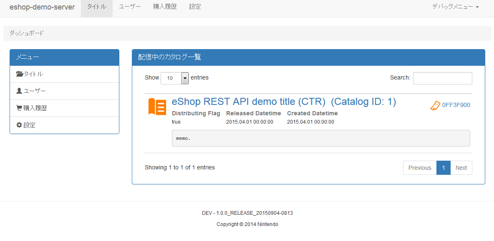

This section describes the server side instructions for the ServiceItemRestApi demo.
4.1. Configuring the Server Demo
This section describes how to build the server demo on a PC.
4.1.1. Operating Environment
Building the server demo requires installation of the Java SE Development Kit and Maven. Operations have been confirmed in the following versions.
| Package | Version |
|---|---|
| Java SE Development Kit | 8 |
| Maven | 3.1.1 |
When using versions newer than Java SE 8u51, there may be instances where valid SSL communications cannot occur due to prohibition of the RC4 cipher suite. As a workaround, it is required that the Java Cryptography Extension be imported so that the Cipher can be safely read.
- Download jce8 (Java Cryptography Extension).
- Extract the downloaded archive file, and copy the included
US_export_policy.jarandlocal_policy.jarfiles to the following location.
- Windows
- JAVA_HOME\jre\lib\security
- Linux
- $JAVA_HOME/jre/lib/security
4.1.2. Building the Server Demo
The Java SE Development Kit and Maven must be configured to build the server demo. Configure these programs as follows.
- Set the
JAVA_HOMEenvironment variable to the path where the Java SE Development Kit is installed. - Add
%JAVA_HOME%/binto thePATHenvironment variable. - Add the path where Maven is installed to the
PATHenvironment variable.
If proxy settings are required to connect to the Internet, configure the proxy server in the conf/settings.xml file located in the Maven installation folder.
Use the following procedure to build the server demo.
- Go to the directory where the server demo
pom.xmlfile is located. - Run the command described in Code 4-1.
- If the log matches the information described in Code 4-2, the build was successful.
- The
demo/eshop-demo-server/target/eshop-demo-server.jarfile is created when the build succeeds.
- The
mvn clean package -DskipTests=true
[INFO] ------------------------------------------------------------------------ [INFO] BUILD SUCCESS [INFO] ------------------------------------------------------------------------
4.1.3. Configuring the Server/Client Certificate
Independent servers that use the eShop REST API must be configured with the client certificate used when operating as a client of the eShop server, and the server certificate used when operating as a server for the game application.
Setting the Client Certificate
See 2.1.3.1. Authentication Between the Independent Server and eShop REST API for details on setting the client certificate.
You can use eshop-cert-sample.keystore and eshop-cert-sample.truststore as a sample client certificate only for title 0xF946D on the Wii U and 0xFF3F9 on the 3DS.
Setting the Server Certificate
See 3.1.5.1. Authentication Between the Game Application and the Independent Server for details on setting the server certificate.
4.1.4. Running the Server Demo
If the server demo is run in a Windows environment, run run-{environment}.bat that is included in the server demo ({environment} is either dev, test, or prod).
In Linux, run commands in the patch file as reference.
- Test whether the demo is running by accessing the following address (or similar) in a web browser.
Example: http://localhost:8888/v1_0/ -
If a server certificate is set up, confirm that it also works at the following address.
Example: https ://localhost:8443/v1_0/ - Set the domain and port based on your own environment.
The following screens are displayed while accessing the server.
